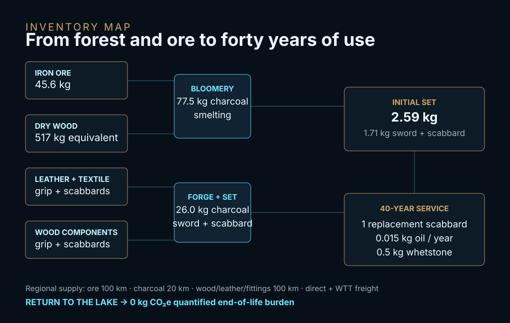
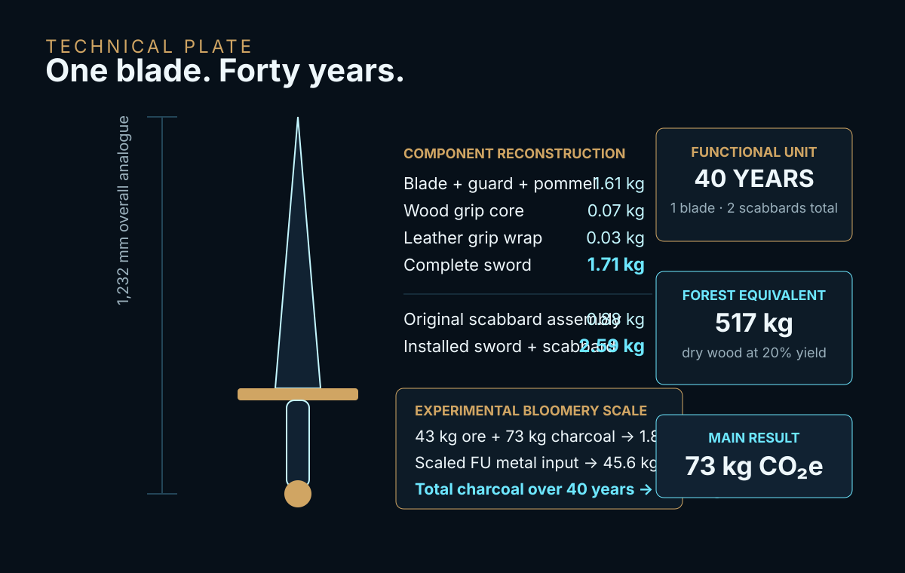
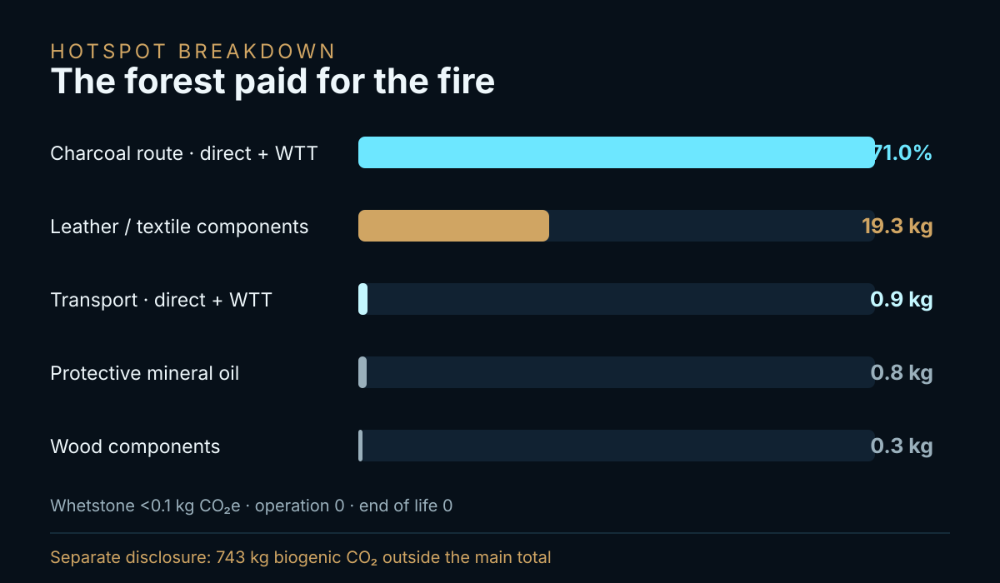

EPISODE #37 · MYTHS & LEGENDS
Excalibur
What is the carbon footprint of the blade that forged a kingdom?
THE SUBJECT
A legendary blade reconstructed from measurable steel.
Excalibur is treated as Arthur's lake-born sword: a weapon of sovereignty, victory and return. No authenticated Excalibur survives, so the physical reconstruction follows a late-medieval European sword measured by the Royal Armouries: 1,232 mm overall and 1.71 kg.
The model separates blade, grip and scabbard through explicit engineering shares, then reconstructs the metal route with an experimental bloomery analogue. Malory provides the narrative constraints; the inventory keeps only physical flows. The Lady of the Lake, the sword in the stone and enchanted sharpness carry no quantified burden.
Complete sword
1.71 kg museum-analogue sword; 2.59 kg for the reconstructed sword-and-scabbard set.
Forty-year FU
One blade, one original scabbard, one replacement scabbard, routine blade care and return to the lake.
Forest behind the steel
103.5 kg charcoal requires 517 kg dry-wood equivalent at the 20% charcoal-yield main assumption.
Main hotspot
The charcoal route contributes 52.2 kg CO₂e, or 71.0% of the forty-year result.
VISUAL MODEL
The sword becomes a life-cycle system
The reconstruction follows the sword from ore and charcoal through forging, scabbard manufacture, regional supply and forty years of maintenance.


LIFE CYCLE INVENTORY
The blade is light. Its thermal history is not.
The approved episode uses DEFRA 2026 factors or proxies for the quantified main GWP. Biogenic CO₂ is disclosed separately; labour, food, horses, campaigns and supernatural effects remain outside the system.
| Stage | Component / activity | Activity data | Climate change | Modelling basis |
|---|---|---|---|---|
| Manufacture | Charcoal route — direct + WTT | 103.5 kg charcoal over the FU; 517 kg dry-wood equivalent at 20% yield | 52.2 kg CO₂e · 71.0% | Experimental bloomery analogue scaled to the sword metal input; DEFRA 2026 wood-log factors applied to dry-wood equivalent. |
| Manufacture + replacement | Leather / textile components | Leather grip wrap, scabbard cover and baldrick; one replacement scabbard over 40 years | 19.3 kg CO₂e | DEFRA Clothing factor used explicitly as a proxy, not as a leather-specific dataset. |
| Materials | Wood components | 0.07 kg grip core; 0.45 kg original scabbard core plus replacement; fabrication loss retained | 0.3 kg CO₂e | DEFRA 2026 Material use, Wood proxy. |
| Transport | Regional material supply — direct + WTT | 45.6 kg iron ore × 100 km; 103.5 kg charcoal × 20 km; wood, leather and fittings × 100 km | 0.9 kg CO₂e | DEFRA 2026 Freighting goods row 63 + WTT delivery vehicles & freight row 58; distances are assumptions. |
| Maintenance | Protective mineral oil | 0.015 kg/year × 40 years | 0.8 kg CO₂e | Routine blade-care assumption retained from the approved episode. |
| Maintenance | Whetstone | 0.5 kg consumed over 40 years | <0.1 kg CO₂e | Small maintenance flow retained in the inventory. |
| Operation | Manual sword use | No electricity or motive fuel allocated to the weapon | 0.0 kg CO₂e | Arthur's metabolism, horses, campaigns and court are excluded. |
| End of life | Return to the lake | No active treatment, recycling process or recovery credit | 0.0 kg CO₂e | Narrative return is retained without a physical end-of-life burden. |
| Separate disclosure | Biogenic CO₂ from the wood route | Wood used to produce smelting and forge charcoal | 743 kg CO₂ · outside headline | Reported separately outside the main total. |
Physical set
Blade, guard and pommel 1.61 kg; wood grip core 0.07 kg; leather grip wrap 0.03 kg; original wood scabbard core 0.45 kg; leather cover + baldrick 0.35 kg; metal scabbard fittings 0.08 kg.
Bloomery scaling
The analogue produced a 1.85 kg billet from 43 kg ore and 73 kg charcoal. Scaled to the FU: 45.6 kg iron ore, 77.5 kg smelting charcoal and 26.0 kg additional forge charcoal.
Boundary rule
Magic is not an emission factor. No physical flow, no burden; no defensible baseline, no credit. The blood-preventing scabbard receives no avoided-treatment credit.
HOTSPOT
Excalibur is defined by fire
The reconstructed set weighs only 2.59 kg, yet inefficient charcoal production and bloomery smelting place more than half a tonne of dry wood behind the blade.

Main result
73 kg CO₂e
Complete forty-year functional unit.
Annualised
1.8 kg CO₂e/year
Manufacture + maintenance divided across the assumed reign.
Hotspot
71.0%
Charcoal route — direct + WTT.
Separate disclosure
743 kg biogenic CO₂
Outside the quantified main GWP.
Charcoal-yield sensitivity
15% yield → 91 kg CO₂e
20% yield → 73 kg CO₂e · main case
33% yield → 53 kg CO₂e
The result is highly sensitive to how efficiently wood becomes charcoal.
Technology sensitivity
Replacing the bloomery metal route with a modern DEFRA primary-metal proxy reduces the total to about 42 kg CO₂e.
Technology matters more than enchantment.
DEFRA share
100% of quantified main GWP uses DEFRA 2026 factors or proxies in the approved episode. Proxy coverage does not imply equal representativeness.
Study status
This is a narrative engineering reconstruction. The approved episode explicitly states that it is not a verified ISO study.
THE VERDICT
The lake gave Arthur a sword.
The forest paid for its fire.
The blade returned to the water.
The carbon did not.